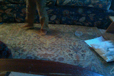

Música y músicos famosos de Carolina del Norte
John Coltrane
Thelonious Monk
James Vernon Taylor
 :
:Doc watson

Anthony Hamilton
Carolina in My Mind
Desayuno
Krispy Kreme Doughnuts:
Aunque la receta es de New Orleans, el primer Krispy Kreme fue abierto en Winston-Salem, Carolina Del Norte
Almuerzo
BBQ:Barbecue:Condimentado con vinagre
El BBQ de Carolina del Norte es una comida tradicional.
Usualmente se come con pan y con coleslaw (ensalada de col).
Se le hecha mucho vinagre a la carne y luego se halan pedazos ('pig picking').
Ed' Mitchell es un cocinero famoso de Carolina del Norte y tiene un restaurante cerca de mi casa.
Aquí pueden ver a Ed' halando la carne de cerdo.
Cena
Shrimp and Grits y otra comida costera
En la costa se consiguen pescados y camarones frescos
Shrimp and Grits es uno de los platos famosos
A mis papas les gusta mucho los mariscos frescos que preparan en el restaurante Salt Box
y si aun tienes hambre puedes de postre comer Krispy Kreme Doughnuts
Los lugares más visitados en Carolina del Norte se encuentran en las Montañas de Apalache
El ¨Blue Ridge Parkway¨ y el Great Smoky Mountains National Park son probablemente los destinos más visitdos en las Montañas Apalaches
El "Blue Ridge Parkway" es una ruta panorámica con bellos paisajes y túneles. El ¨Blue Ridge Parkway¨ es el parque lineal más largo de los Estados Unidos.
El Great Smoky Mountains National Park es el parque nacional más visitado en los Estados Unidos, recibiendo más de 11 millones de visitantes al año.
A papá, mamá y a mí nos encanta el Parque Pisgah que también queda en las Apalaches.
En Pisgah acampamos y hacemos caminatas a ver cascadas.
Cape Hatteras Lighthouse
Aunque mi papá no se impresiona con las playas de Carolina de Norte, mucha gente visitas sus playas y sus faros históricos como el Faro del Cabo Hatteras
El zoológico más extenso del mundo se encuentra en Asheboro, NC
Los animales tienen tanto espacio que parecen estar en su ambiente natural
Si tienen hambre pueden visitar un Krispy Kreme
Muchos de los bailes se orginan de bailes afroamericanos del siglo 19
Se dice que el paso buck fue inventado en las Carolinas
Aquí un video de unos vecinos bailando en una casa en las Apalaches
En esta sección del video prodran ver como bailan en grupo
Aquí una toma de los pies de los bailarines
Une baile local:"thump thump and jump"
↓thump thump and jump
Creado por Jacobo (por eso es un baile local)
John Coltrane
Thelonious Monk
James Vernon Taylor:
Carolina in My Mind
Doc watson
Anthony Hamilton
EN CONSTRUCCION
Krispy Kreme{kind=link}